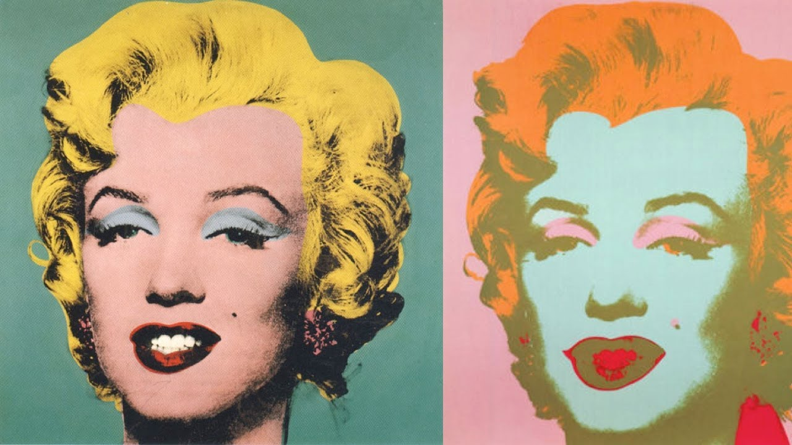
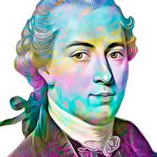

"LA IMAGINACIÓN EN EL JUICIO SOBRE LO BELLO"
Observar unicornios, sirenas, dragones u otros personajes salientes de mitos y leyendas urbanas en dibujos rigurosamente detallados nos demuestra la capacidad de imaginación del ser humano; el plasmar en una imagen aquello que no se ha visto, con fragmentos de algo que ya se conoce y el pensar infinitas posibilidades de fusión para dar con un resultado único no es más que una de miles de capacidades humanas. Y esta capacidad llamada imaginación influye en cada individuo para, a partir de esta, determinar si algo es bello.
Lo bello se puede catalogar como aquello que nos place a primera impresión, nos satisface a través de los sentidos y nuestro gusto por lo bello no cambia, no se modifica, lo que nos parece bello una vez, será bello para nosotros siempre.
Pero, ¿cómo sabemos que algo es bello? ¿Qué juicio llevamos a cabo para llegar a dicha conclusión? La estética es factor clave, evidentemente, de que veamos algo bello. Ya sea el encuentro de la estética en la proporción, armonía, expresión, etc. Todos aquellos aspectos son el resultado o conclusión de poner en juego nuestros sentidos haciéndoles total participe del juicio.
Por otro lado, considero errado pensar que lo bello se fundamenta únicamente en el entendimiento o raciocinio de una persona. Planteémoslo de la siguiente forma; las mariposas son consideradas bellas y es evidente que así es, sus coloridas alas son agradables a la vista y precisamente esa perfecta combinación de colores, el patrón dibujado en sus alas y tal vez lo diminuto que puede llegar a ser para tener tan majestuosas características es lo que las hace bellas y esta conclusión la hemos sacado únicamente visualizando una mariposa. Sin embargo, si de la oruga de la que se proviene la mariposa se tratase, no podemos tener la misma impresión, es simplemente un gusano más a la vista, no tiene nada de especial ni bello que destaque, y el tener el conocimiento o entender que de esa oruga sale tan bella mariposa, no hace a la oruga bella porque no nos place verla.
El entendimiento si va de la mano con lo bello, pero no es lo fundamental. El entendimiento tiene protagonismo en el momento de razonar, pensar e indagar acerca de algo, buscando como conclusión que tan conveniente o acertado sea aquello en lo que estamos pensando y a esto se le denomina lo bueno. Lo bueno a diferencia de lo bello, no se juzga con la primera impresión, se califica con la razón, es aquello que es bueno porque entra en esos conocimientos o estándares previos que tienes personalmente o en comunidad. Un ejemplo sencillo se puede ilustrar con cómo juzgamos una película, para ser bella no más basta con una buena calidad, una combinación de colores y escenografías atractivas a la vista añadiéndole como plus unos diálogos que toquen sentimientos. Pero si queremos catalogar aquella película como buena tenemos que tener un criterio cinéfilo que se forja precisamente con conocimiento previo y si aquella película tiene los elementos necesarios que entren en los estándares críticos de un rodaje cinematográfico, pues se podrá definir como buena.
Pues bien, en el juicio de lo denominado bello necesitamos de ambos elementos; imaginación y entendimiento. La imaginación como componente sensitivo, en el que podemos plasmar la imagen de una idea atractiva como primera impresión y con la que podemos llevar a cabo un exquisito viaje de satisfacción con la pieza que estamos juzgando en el que podemos comparar emociones y sentimientos de la pieza con los nuestros propios hace de la imaginación un punto clave para determinar lo bello. Pero de igual manera el entendimiento ayuda a darle otra mirada a la pieza, contextualizarse con la idea que nos quiere dar nos da una perspectiva de la que se puede sacar provecho y el indagar para picar nuestra curiosidad da a la pieza esa intriga que la hace disfrutable.
Roger Sperry planteaba en su extensiva tesis que el cerebro humano estaba compuesto de dos hemisferios, el derecho y el izquierdo; el izquierdo racional y el derecho creativo. Ya sea que una persona tenga mayor dominio en el hemisferio izquierdo que en el derecho y viceversa, es imposible no reconocer que el ser humano posee una imaginación única, teniendo su clímax en la infancia y a medida que se va creciendo, es una decisión individual el desarrollarla o no, pero es inconcebible la afirmación de que hay personas sin imaginación, si Descartes propuso que la clave para saber que existimos es el pensamiento, la imaginación entra aquí también, pues como dijo Albert Jacquard “sin imaginación no puede hacer creación”
Poniendo esto como base, podríamos decir que para que algo sea considerado que es bello, se necesita el perfecto equilibrio con ambos hemisferios del cerebro, pues un factor va de la mano con el otro y aquella armonía hace que lo bello sea bello, que sea disfrutable y nos satisfaga constantemente, pues aunque se pueda decir que la belleza es subjetiva, es indudable que va de la mano con la belleza objetiva individual y aquello hace más interesante la búsqueda de la respuesta a la interrogante de cómo podemos saber qué es lo bello teniendo en cuenta la gran diversidad de pensamiento individual.
“Nada es más contrario a lo bello que lo repugnante, así como nada cae más por debajo de lo sublime que lo ridículo”
-Immanuel Kant.